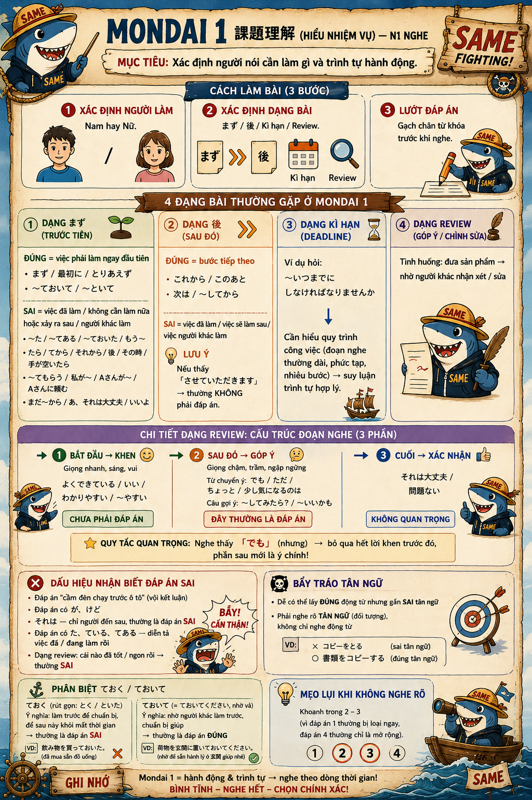

Xác định người nói cần làm gì và trình tự hành động — khác Mondai 2 (nắm ý chính), Mondai 1 cần bắt đúng hành động cụ thể và làm trước/làm sau.
Tình huống: 1 người đưa sản phẩm/bài làm → nhờ người khác nhận xét, góp ý, sửa. Đây là dạng dễ chọn nhầm nhất vì đáp án đúng thường nằm ở phần GIỮA đoạn nghe, không phải đầu hay cuối — xem cấu trúc 3 phần ngay bên dưới.
| ておく (rút gọn: とく/といた) | ておいて (= ておいてください, nhờ vả) | |
|---|---|---|
| Ý nghĩa | Người NÓI tự làm trước để chuẩn bị, sau này khỏi mất thời gian | Nhờ NGƯỜI KHÁC làm trước, chuẩn bị giúp |
| Ví dụ | 飲み物を買っておいた。(đã mua sẵn đồ uống) | 荷物を玄関に置いておいてください。(nhờ để sẵn hành lý ở giường giúp) |
| Thường là | ✗ Đáp án SAI (việc đã làm rồi) | ✓ Đáp án ĐÚNG |
Khoanh trong đáp án 2 – 3 (vì đáp án 1 thường bị loại ngay, đáp án 4 thường chỉ là mở rộng/bổ sung chứ không phải hành động chính).